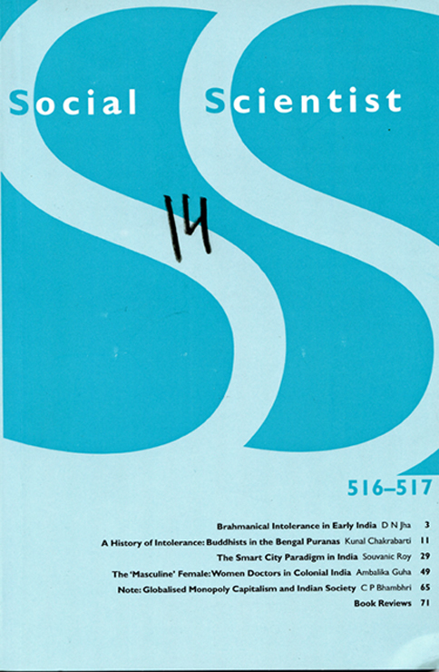

v. 44: No. 5-6 May-June 2016 #516-517
|
Editorial Note, p. 1 "Brahmanical Intolerance in Early India," D N Jha, p. 3 "A History of Intolerance: Buddhists in the Bengal Puranas," Kunal Chakrabarti, p. 11 "The Smart City Paradigm in India," Souvanic Roy, p. 29 "The 'Masculine' Female: Women Doctors in Colonial India," Ambalika Guha, p. 49 "Note: Globalised Monopoly Capitalism and Indian Society," C P Bhambhri, p. 65 |
 Click to see larger |
Book Reviews, p. 71-95
 p. 71. Irfan Habib's review of
p. 71. Irfan Habib's review of
Vaqar Siddiqui,
Do Sarfarosh Shaair, Ram Prasad 'BismiV aur Ashfaqullah Khan 'Hasraf (Urdu), New Delhi: Anjuman-i Taraqqi-i Urdu, 2015, 179 pages, Rs 180.
p. 72. Nina Rao's review of Sunayan Sharma, Sariska: The Tiger Reserve Roars Again, New Delhi: Niyogi Books, 2015, 224 pages, Rs 650
p. 75. Santosh Kumar Rai's review of R. L. Shukla, Dynamics of Colonialism and Imperialism: India and West Asia, Delhi: Manak Publications, 2015, 190 pages, Rs 750
p. 77. Saba Joshi's review of Srila Roy, Remembering Revolution: Gender, Violence and Subjectivity in India's Naxalbari Movement, New Delhi: Oxford University Press, 2013, 252 pages, Rs. 725
p. 80. Nandan Nawn's review of Sharachchandra Lele and Ajit Menon, eds, Democratising Forest Governance in India, New Delhi: Oxford University Press, xiv+432 pages, Rs 495
p. 86. Sharmila ChJhotaray's review of translated with an introduction by Rakesh H. Solomon, Globalisation, Nationalism and the Text of Kichaka-Vadha, the first English translation of the Marathi anti-colonial classic, with a historical analysis of theatre in British India, Anthem Press India, 2015, x+166 pages, price not mentioned
p. 89. Ko Ashok Rao's review of M. S. Swaminathan, Combating Hunger and Achieving Food Security, Cambridge University Press, 2015, 164 pages, Rs 575.
p. 94. Saif Mahmood's review of Hallie Ludsin, Preventive Detention and the Democratic State, Cambridge University Press, 2016, 432 pages, Rs 1200
Back to the top.
Back to the top.
Editorial Note
It is often claimed that in contrast to the Semitic religions, which are imbued with a proselytising drive and are therefore intrinsically incapable of settling down to a state of peaceful mutual coexistence, Hinduism is characterised by a certain tolerance and accommodativeness. In the current issue of Social Scientist, however, we have articles by two renowned historians of ancient India disputing this view and highlighting the intolerance of brahmanism towards Buddhism in particular, which at one point of time had posed a serious challenge to its hegemony.
D.N. Jha's article, based on his Presidential address to the Indian History Congress session held at Visva Bharati, Santiniketan, is additionally noteworthy for a specific reason: apart from providing evidence on the intolerance of brahmanism towards Buddhism and Jainism, he also cites several references to the use of physical violence against the Buddhists. There could of course be an element of exaggeration in such reports of violence, but repeated references to it suggest that there must be some truth in them. Indeed Brahmana belligerence towards the Shramanas, Jha suggests, was linked to the martialisation of the Brahmanas who started receiving training in martial arts and also carrying arms.
Kunal Chakrabarti's paper, which is the text of his Presidential address to the Ancient India section of the Indian History Congress session held at Malda, cites as evidence of intolerance the representation of the Buddhists in the Puranas in Bengal. While he does not find any evidence of direct oppression of the Buddhists, even during the Sena rule in Bengal, the attitude of the Brahmanas towards the Buddhists was marked by extreme aggressiveness. Even the incorporation of the Buddha as an incarnation of Vishnu, which is often cited as evidence of Brahmana tolerance, was often based on a distinction between the Buddha and Buddhists, and a denigration of the latter. There was no question of Brahmanism extending to the Buddhists, in the realm of ideas, the right to coexist despite differences, which constitutes the essence of tolerance.
Souvanic Roy examines the Smart City project of the National Democratic Alliance (NDA) government and contrasts it with the content of several grassroots-level plans developed by local governments around the world for creating a better urban space (including the Kollam Development Plan drawn up in Kerala). He sees the Smart City initiative as being promoted by the world's largest hardware and software companies to
Social Scientist, p. 2
ensure 'world-class' living and working experience for the stratum of rich and upper middle class that has strengthened itself under the neoliberal dispensation. Such a project cannot by its very nature be inclusive.
Ambalika Guha argues that women doctors in colonial India, in their pursuit of professional recognition so that they would not lag behind their male counterparts, took little interest in the actual requirements of Indian women. They even adopted an essentially 'masculine approach' to pregnancy and childbirth, which did not accord any importance to the question of training the 'dhais' and integrating them into the modern medical system (whence the term 'masculine female' used for them in the title of the paper).
C.P. Bhambri notes the huge shift that has taken place in the hegemonic ideology of the Indian State between the post-independence period and now. While socialism and secularism were the two principal terms in the discourse immediately after independence, today the dominant discourse revolves around Hindutva and building capitalism with the help of global monopoly capital. This pair-wise antinomy is itself of significance: it underscores the complementarity under contemporary conditions between the capitalist project and communalism, and by inference between authentic secularism and the socialist project. He attributes this shift to the fact that the Indian experiment in mixed economy and planning failed to meet the expectations of the people who had been long steeped in abject poverty, which made them more receptive to the promises of the Hindutva crowd.
Back to the top.
Webbed by
Philip McEldowney
Last update:
(none).
Count - 2